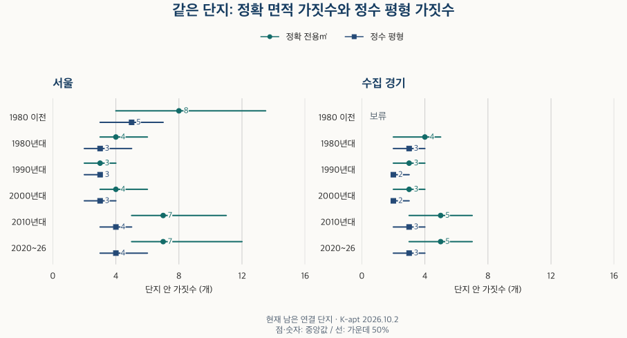
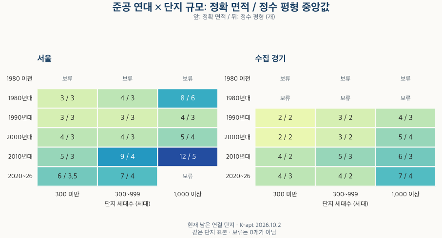

아파트의 진화 · 면적 가짓수
아파트 평형 종류: 신축 단지는 면적 가짓수가 더 많을까?
서울·수집 경기의 단지별 전용면적 가짓수를 준공 연대와 세대수 규모로 비교합니다. 정확 면적과 정수 평형의 차이, 한 가지 면적 단지 비율, 정보 누락과 평면도 해석의 한계를 확인합니다.
분석 기간 · 현재 단지의 면적 가짓수 · 서울 25구·수집 경기 36개 지역 | 자료 기준일 · 2026-10-02
아파트 면적표에 숫자가 많이 적혀 있으면 선택지도 그만큼 다양할까요? 전용면적의 소수점이 조금 다른 주택을 각각 세는지, 가까운 면적을 한 평형으로 묶는지에 따라 답이 달라집니다. 현재 남아 있는 서울·수집 경기 단지를 준공 연대와 세대수 규모로 나누어 비교했습니다.
면적표 한 줄이 곧 주택형 하나일까요?
이 글은 양의 세대수가 있는 서로 다른 숫자 전용면적을 셉니다. 한국부동산원이 안내하는 K-apt 면적정보에는 단지의 전용면적과 세대수가 들어 있습니다. 같은 단지·같은 자료일자의 같은 면적이 반복되면 세대수를 더한 뒤 한 가지로 셉니다. 자료의 줄 수를 그대로 종류 수로 쓰지 않습니다.
한 단지에 84.5㎡, 84.5000㎡, 84.6㎡가 적혀 있고 각각 세대수가 있다고 가정합니다. 앞의 두 값은 숫자로 같으므로 정확 면적은 두 가지입니다. 세 값을 전용 정수 평형으로 바꾸면 모두 26평형에 들어가 한 가지가 됩니다.
전용 정수 평형은 전용㎡를 3.3058로 나눈 뒤 가장 가까운 정수로 반올림한 값입니다. 이 글의 보조 비교는 동일한 단지를 이 기준으로 다시 센 것입니다. 정확 면적이 두 개여도 같은 정수 평형에 들어갈 수 있습니다. 전용면적과 공급면적의 차이는 아파트 데이터 용어집에서 확인할 수 있습니다.
두 기준 모두 분양 안내의 A형·B형 평면도 개수를 뜻하지 않습니다. 면적이 같아도 방 배치와 구조가 다르면 이 자료에서는 하나로 보일 수 있습니다. 반대로 소수 면적의 작은 차이는 정확 면적 가짓수를 늘립니다. 따라서 숫자가 많다는 사실만으로 실거주 선택지가 같은 폭으로 넓어졌다고 해석하면 안 됩니다.
신축일수록 면적 가짓수가 더 많을까요?
1990~2000년대와 최근 연대를 비교하면 대체로 많습니다. 다만 전체 연대를 한 줄로 놓으면 계속 증가하는 모습은 아닙니다. 아래에서는 단지마다 같은 가중치를 주어 중앙값과 가운데 50%가 놓이는 범위를 계산했습니다.

| 지역·준공 연대 | 정확 면적 중앙값 | 가운데 50% | 정수 평형 중앙값 | 가운데 50% |
|---|---|---|---|---|
| 서울 · 전체 준공 연대 | 4개 | 3개–7개 | 3개 | 2개–4개 |
| 서울 · 1980년 이전 | 8개 | 4개–13.5개 | 5개 | 3개–7개 |
| 서울 · 1980년대 | 4개 | 3개–6개 | 3개 | 2개–5개 |
| 서울 · 1990년대 | 3개 | 2개–4개 | 3개 | 2개–3개 |
| 서울 · 2000년대 | 4개 | 3개–6개 | 3개 | 2개–4개 |
| 서울 · 2010년대 | 7개 | 5개–11개 | 4개 | 3개–5개 |
| 서울 · 2020~2026년 | 7개 | 5개–12개 | 4개 | 3개–6개 |
| 서울 · 준공연도 미상 | 보류 | 보류 | 보류 | 보류 |
| 수집 경기 · 전체 준공 연대 | 3개 | 2개–5개 | 2개 | 2개–3개 |
| 수집 경기 · 1980년 이전 | 보류 | 보류 | 보류 | 보류 |
| 수집 경기 · 1980년대 | 4개 | 2개–5개 | 3개 | 2개–4개 |
| 수집 경기 · 1990년대 | 3개 | 2개–4개 | 2개 | 2개–3개 |
| 수집 경기 · 2000년대 | 3개 | 2개–4개 | 2개 | 2개–3개 |
| 수집 경기 · 2010년대 | 5개 | 3개–7개 | 3개 | 2개–4개 |
| 수집 경기 · 2020~2026년 | 5개 | 3개–7개 | 3개 | 2개–4개 |
| 수집 경기 · 준공연도 미상 | 보류 | 보류 | 보류 | 보류 |
서울은 1990년대 3개, 2000년대 4개, 2010년대와 2020~2026년 각각 7개가 정확 면적 가짓수의 중앙값입니다. 그러나 1980년 이전은 8개입니다. 현재 남아 있으면서 자료가 연결된 오래된 단지가 최근 연대보다 적은 종류만 가진다고 단정할 수 없습니다.
정수 평형으로 묶으면 서울의 1990~2000년대 중앙값은 3개, 2010년대 이후는 4개입니다. 수집 경기의 같은 비교는 2개와 3개입니다. 면적을 잘게 구분한 변화와 넓은 면적 선택 범위의 차이가 함께 섞여 있습니다. 가운데 50% 범위도 겹치므로 한 단지의 실제 구성을 연대 중앙값으로 대신할 수 없습니다.
표의 가운데 50%는 단지 분포의 25분위부터 75분위까지이며 신뢰구간이 아닙니다. 적은 단지로 계산되는 구간은 보류했습니다. 수집 경기의 1980년 이전을 0개로 읽거나 선으로 이어 추정하지 않습니다.
단지가 커서 면적 종류도 많은 것 아닐까요?
그 가능성이 있습니다. 그래서 300세대 미만, 300~999세대, 1,000세대 이상으로 나누어 같은 준공 연대를 비교했습니다. 이 구간은 비교를 위해 정한 것이며 법적 단지 분류는 아닙니다.

서울의 300~999세대 단지에서는 정확 면적 중앙값이 2000년대 4개에서 2010년대 9개로 커지고, 2020~2026년에는 7개입니다. 같은 규모에서도 준공 연대가 최근이라고 계속 늘지는 않습니다.
묶는 단위에 따른 차이도 남습니다. 서울 300세대 미만에서 1990년대·2000년대·2010년대의 정수 평형 중앙값은 모두 3개입니다. 수집 경기 300~999세대는 2010년대 3개, 2020~2026년 2개입니다. 큰 단지의 비중만으로 모든 차이를 설명할 수도, 신축의 선택지가 언제나 넓다고 말할 수도 없습니다.
300세대 미만 · 준공 연대별 분포
| 지역·준공 연대 | 정확 면적 중앙값 | 가운데 50% | 정수 평형 중앙값 | 가운데 50% |
|---|---|---|---|---|
| 서울 · 전체 준공 연대 | 4개 | 3개–5개 | 3개 | 2개–4개 |
| 서울 · 1980년 이전 | 보류 | 보류 | 보류 | 보류 |
| 서울 · 1980년대 | 3개 | 2개–4개 | 3개 | 2개–3개 |
| 서울 · 1990년대 | 3개 | 2개–4개 | 3개 | 2개–3개 |
| 서울 · 2000년대 | 4개 | 3개–5개 | 3개 | 2개–4개 |
| 서울 · 2010년대 | 5개 | 3개–8개 | 3개 | 2개–4.5개 |
| 서울 · 2020~2026년 | 6개 | 4개–8.5개 | 3.5개 | 3개–5개 |
| 서울 · 준공연도 미상 | 보류 | 보류 | 보류 | 보류 |
| 수집 경기 · 전체 준공 연대 | 3개 | 2개–4개 | 2개 | 2개–3개 |
| 수집 경기 · 1980년 이전 | 보류 | 보류 | 보류 | 보류 |
| 수집 경기 · 1980년대 | 보류 | 보류 | 보류 | 보류 |
| 수집 경기 · 1990년대 | 2개 | 2개–3개 | 2개 | 2개–3개 |
| 수집 경기 · 2000년대 | 2개 | 2개–3개 | 2개 | 1개–3개 |
| 수집 경기 · 2010년대 | 4개 | 2개–6개 | 2개 | 2개–3개 |
| 수집 경기 · 2020~2026년 | 4개 | 3개–6개 | 3개 | 2개–4개 |
| 수집 경기 · 준공연도 미상 | 보류 | 보류 | 보류 | 보류 |
300~999세대 · 준공 연대별 분포
| 지역·준공 연대 | 정확 면적 중앙값 | 가운데 50% | 정수 평형 중앙값 | 가운데 50% |
|---|---|---|---|---|
| 서울 · 전체 준공 연대 | 5개 | 3개–7개 | 3개 | 2개–4개 |
| 서울 · 1980년 이전 | 보류 | 보류 | 보류 | 보류 |
| 서울 · 1980년대 | 4개 | 3개–6개 | 3개 | 3개–4개 |
| 서울 · 1990년대 | 3개 | 2개–4개 | 3개 | 2개–3개 |
| 서울 · 2000년대 | 4개 | 3개–6개 | 3개 | 3개–4개 |
| 서울 · 2010년대 | 9개 | 6개–11개 | 4개 | 3개–5개 |
| 서울 · 2020~2026년 | 7개 | 6개–10개 | 4개 | 3개–6개 |
| 서울 · 준공연도 미상 | 보류 | 보류 | 보류 | 보류 |
| 수집 경기 · 전체 준공 연대 | 3개 | 2개–5개 | 2개 | 2개–3개 |
| 수집 경기 · 1980년 이전 | 보류 | 보류 | 보류 | 보류 |
| 수집 경기 · 1980년대 | 보류 | 보류 | 보류 | 보류 |
| 수집 경기 · 1990년대 | 3개 | 2개–3개 | 2개 | 2개–3개 |
| 수집 경기 · 2000년대 | 3개 | 2개–4개 | 2개 | 2개–3개 |
| 수집 경기 · 2010년대 | 5개 | 3개–7개 | 3개 | 2개–4개 |
| 수집 경기 · 2020~2026년 | 4개 | 3개–6개 | 2개 | 2개–3개 |
| 수집 경기 · 준공연도 미상 | 보류 | 보류 | 보류 | 보류 |
1,000세대 이상 · 준공 연대별 분포
| 지역·준공 연대 | 정확 면적 중앙값 | 가운데 50% | 정수 평형 중앙값 | 가운데 50% |
|---|---|---|---|---|
| 서울 · 전체 준공 연대 | 7개 | 4개–12개 | 4개 | 3개–6개 |
| 서울 · 1980년 이전 | 보류 | 보류 | 보류 | 보류 |
| 서울 · 1980년대 | 8개 | 5개–13개 | 6개 | 4개–9개 |
| 서울 · 1990년대 | 4개 | 3개–5개 | 3개 | 3개–4개 |
| 서울 · 2000년대 | 5개 | 4개–7개 | 4개 | 3개–5개 |
| 서울 · 2010년대 | 12개 | 9개–16.5개 | 5개 | 4개–6.5개 |
| 서울 · 2020~2026년 | 보류 | 보류 | 보류 | 보류 |
| 서울 · 준공연도 미상 | 보류 | 보류 | 보류 | 보류 |
| 수집 경기 · 전체 준공 연대 | 5개 | 4개–8개 | 3개 | 2개–5개 |
| 수집 경기 · 1980년 이전 | 보류 | 보류 | 보류 | 보류 |
| 수집 경기 · 1980년대 | 보류 | 보류 | 보류 | 보류 |
| 수집 경기 · 1990년대 | 4개 | 3개–6개 | 3개 | 2개–4개 |
| 수집 경기 · 2000년대 | 5개 | 3개–6개 | 4개 | 2개–5개 |
| 수집 경기 · 2010년대 | 6개 | 4개–9개 | 3개 | 2개–4개 |
| 수집 경기 · 2020~2026년 | 7개 | 5개–10.5개 | 4개 | 3개–6개 |
| 수집 경기 · 준공연도 미상 | 보류 | 보류 | 보류 | 보류 |
세대수 미상 · 준공 연대별 분포
| 지역·준공 연대 | 정확 면적 중앙값 | 가운데 50% | 정수 평형 중앙값 | 가운데 50% |
|---|---|---|---|---|
| 서울 · 전체 준공 연대 | 보류 | 보류 | 보류 | 보류 |
| 서울 · 1980년 이전 | 보류 | 보류 | 보류 | 보류 |
| 서울 · 1980년대 | 보류 | 보류 | 보류 | 보류 |
| 서울 · 1990년대 | 보류 | 보류 | 보류 | 보류 |
| 서울 · 2000년대 | 보류 | 보류 | 보류 | 보류 |
| 서울 · 2010년대 | 보류 | 보류 | 보류 | 보류 |
| 서울 · 2020~2026년 | 보류 | 보류 | 보류 | 보류 |
| 서울 · 준공연도 미상 | 보류 | 보류 | 보류 | 보류 |
| 수집 경기 · 전체 준공 연대 | 보류 | 보류 | 보류 | 보류 |
| 수집 경기 · 1980년 이전 | 보류 | 보류 | 보류 | 보류 |
| 수집 경기 · 1980년대 | 보류 | 보류 | 보류 | 보류 |
| 수집 경기 · 1990년대 | 보류 | 보류 | 보류 | 보류 |
| 수집 경기 · 2000년대 | 보류 | 보류 | 보류 | 보류 |
| 수집 경기 · 2010년대 | 보류 | 보류 | 보류 | 보류 |
| 수집 경기 · 2020~2026년 | 보류 | 보류 | 보류 | 보류 |
| 수집 경기 · 준공연도 미상 | 보류 | 보류 | 보류 | 보류 |
규모를 나눈 비교에도 입지·사업 방식·재건축 여부 등의 차이는 남습니다. 이 표는 그런 조건을 같게 만든 인과효과가 아닙니다. 보류한 조합을 포함해 전체 비교 범위를 남겼으며, 전체 규모와 개별 규모의 결과를 서로 더하지 않습니다.
한 가지 면적만 있는 단지는 얼마나 될까요?
전체 준공 연대를 합친 적격 단지 중 정확 면적 값이 하나인 비율은 서울 약 5%, 수집 경기 약 10%입니다. 같은 단지에서 정수 평형이 하나인 비율은 약 10%, 약 20%입니다. 표기상 서로 다른 면적 몇 가지가 한 평형에 모여 있을 수 있기 때문입니다.
| 지역 | 정확 면적 한 가지 | 정수 평형 한 가지 |
|---|---|---|
| 서울 | 5% | 10% |
| 수집 경기 | 10% | 20% |
비율의 분모는 면적을 확인한 단지 수입니다. 주택 한 채에 한 표를 주는 세대수 비중이 아닙니다. 또 하나의 면적에 같은 구조만 있다고 확인한 결과도 아닙니다.
서울 · 연대·규모별 한 가지 비율
| 준공 연대 | 단지 규모 | 정확 면적 한 가지 | 정수 평형 한 가지 |
|---|---|---|---|
| 전체 준공 연대 | 전체 규모 | 5% | 10% |
| 전체 준공 연대 | 300세대 미만 | 보류 | 보류 |
| 전체 준공 연대 | 300~999세대 | 5% | 5% |
| 전체 준공 연대 | 1,000세대 이상 | 보류 | 보류 |
| 전체 준공 연대 | 세대수 미상 | 보류 | 보류 |
| 1980년 이전 | 전체 규모 | 보류 | 보류 |
| 1980년 이전 | 300세대 미만 | 보류 | 보류 |
| 1980년 이전 | 300~999세대 | 보류 | 보류 |
| 1980년 이전 | 1,000세대 이상 | 보류 | 보류 |
| 1980년 이전 | 세대수 미상 | 보류 | 보류 |
| 1980년대 | 전체 규모 | 보류 | 보류 |
| 1980년대 | 300세대 미만 | 보류 | 보류 |
| 1980년대 | 300~999세대 | 보류 | 보류 |
| 1980년대 | 1,000세대 이상 | 보류 | 보류 |
| 1980년대 | 세대수 미상 | 보류 | 보류 |
| 1990년대 | 전체 규모 | 10% | 15% |
| 1990년대 | 300세대 미만 | 보류 | 보류 |
| 1990년대 | 300~999세대 | 10% | 15% |
| 1990년대 | 1,000세대 이상 | 보류 | 보류 |
| 1990년대 | 세대수 미상 | 보류 | 보류 |
| 2000년대 | 전체 규모 | 5% | 10% |
| 2000년대 | 300세대 미만 | 보류 | 보류 |
| 2000년대 | 300~999세대 | 보류 | 보류 |
| 2000년대 | 1,000세대 이상 | 0% | 0% |
| 2000년대 | 세대수 미상 | 보류 | 보류 |
| 2010년대 | 전체 규모 | 보류 | 보류 |
| 2010년대 | 300세대 미만 | 보류 | 보류 |
| 2010년대 | 300~999세대 | 보류 | 보류 |
| 2010년대 | 1,000세대 이상 | 0% | 0% |
| 2010년대 | 세대수 미상 | 보류 | 보류 |
| 2020~2026년 | 전체 규모 | 보류 | 보류 |
| 2020~2026년 | 300세대 미만 | 보류 | 보류 |
| 2020~2026년 | 300~999세대 | 보류 | 보류 |
| 2020~2026년 | 1,000세대 이상 | 보류 | 보류 |
| 2020~2026년 | 세대수 미상 | 보류 | 보류 |
| 준공연도 미상 | 전체 규모 | 보류 | 보류 |
| 준공연도 미상 | 300세대 미만 | 보류 | 보류 |
| 준공연도 미상 | 300~999세대 | 보류 | 보류 |
| 준공연도 미상 | 1,000세대 이상 | 보류 | 보류 |
| 준공연도 미상 | 세대수 미상 | 보류 | 보류 |
수집 경기 · 연대·규모별 한 가지 비율
| 준공 연대 | 단지 규모 | 정확 면적 한 가지 | 정수 평형 한 가지 |
|---|---|---|---|
| 전체 준공 연대 | 전체 규모 | 10% | 20% |
| 전체 준공 연대 | 300세대 미만 | 15% | 25% |
| 전체 준공 연대 | 300~999세대 | 10% | 20% |
| 전체 준공 연대 | 1,000세대 이상 | 0% | 10% |
| 전체 준공 연대 | 세대수 미상 | 보류 | 보류 |
| 1980년 이전 | 전체 규모 | 보류 | 보류 |
| 1980년 이전 | 300세대 미만 | 보류 | 보류 |
| 1980년 이전 | 300~999세대 | 보류 | 보류 |
| 1980년 이전 | 1,000세대 이상 | 보류 | 보류 |
| 1980년 이전 | 세대수 미상 | 보류 | 보류 |
| 1980년대 | 전체 규모 | 보류 | 보류 |
| 1980년대 | 300세대 미만 | 보류 | 보류 |
| 1980년대 | 300~999세대 | 보류 | 보류 |
| 1980년대 | 1,000세대 이상 | 보류 | 보류 |
| 1980년대 | 세대수 미상 | 보류 | 보류 |
| 1990년대 | 전체 규모 | 10% | 15% |
| 1990년대 | 300세대 미만 | 보류 | 보류 |
| 1990년대 | 300~999세대 | 10% | 15% |
| 1990년대 | 1,000세대 이상 | 보류 | 보류 |
| 1990년대 | 세대수 미상 | 보류 | 보류 |
| 2000년대 | 전체 규모 | 15% | 25% |
| 2000년대 | 300세대 미만 | 보류 | 보류 |
| 2000년대 | 300~999세대 | 15% | 20% |
| 2000년대 | 1,000세대 이상 | 보류 | 보류 |
| 2000년대 | 세대수 미상 | 보류 | 보류 |
| 2010년대 | 전체 규모 | 0% | 15% |
| 2010년대 | 300세대 미만 | 5% | 20% |
| 2010년대 | 300~999세대 | 보류 | 보류 |
| 2010년대 | 1,000세대 이상 | 보류 | 보류 |
| 2010년대 | 세대수 미상 | 보류 | 보류 |
| 2020~2026년 | 전체 규모 | 보류 | 보류 |
| 2020~2026년 | 300세대 미만 | 보류 | 보류 |
| 2020~2026년 | 300~999세대 | 보류 | 보류 |
| 2020~2026년 | 1,000세대 이상 | 보류 | 보류 |
| 2020~2026년 | 세대수 미상 | 보류 | 보류 |
| 준공연도 미상 | 전체 규모 | 보류 | 보류 |
| 준공연도 미상 | 300세대 미만 | 보류 | 보류 |
| 준공연도 미상 | 300~999세대 | 보류 | 보류 |
| 준공연도 미상 | 1,000세대 이상 | 보류 | 보류 |
| 준공연도 미상 | 세대수 미상 | 보류 | 보류 |
세부 비율은 한 면적 단지, 여러 면적이지만 한 정수 평형인 단지, 정수 평형이 여러 개인 단지를 함께 확인했습니다. 작은 집단이나 공개값을 서로 빼서 알아낼 수 있는 집단은 관련 비율을 함께 가렸습니다. 보류는 0%가 아니며, 반올림된 0% 역시 한 곳도 없다는 뜻이 아닙니다. 비율은 5%포인트 단위로 반올림했으므로 두 표시값이 같아도 원래 비율이 정확히 같은 것은 아닙니다.
이 결과를 모든 아파트에 적용해도 될까요?
보유한 단지 전체를 대표하는 확률표본은 아닙니다. 전체 준공 연대에서 비교에 들어온 단지는 서울 보유 단지 수의 20~30%, 수집 경기의 50~60% 구간입니다. 세대수가 알려진 전체 재고를 기준으로 보면 각각 70~80%, 90~100% 구간입니다. 단지 기준과 세대수 기준의 가용률이 다르므로 규모에 따른 누락도 함께 보아야 합니다.
서울 · 비교에 포함된 범위
| 준공 연대·규모 | 단지 수 기준 | 알려진 세대수 기준 | 세대수 미상 단지 비중 |
|---|---|---|---|
| 전체 준공 연대 · 전체 규모 | 20–30% | 70–80% | 0–10% |
| 전체 준공 연대 · 300세대 미만 | 10–20% | 50–60% | 0–10% |
| 전체 준공 연대 · 300~999세대 | 90–100% | 90–100% | 0–10% |
| 전체 준공 연대 · 1,000세대 이상 | 80–90% | 80–90% | 0–10% |
| 전체 준공 연대 · 세대수 미상 | 자료 부족 | 자료 부족 | 자료 부족 |
| 1980년 이전 · 전체 규모 | 10–20% | 60–70% | 20–30% |
| 1980년 이전 · 300세대 미만 | 자료 부족 | 자료 부족 | 자료 부족 |
| 1980년 이전 · 300~999세대 | 자료 부족 | 자료 부족 | 자료 부족 |
| 1980년 이전 · 1,000세대 이상 | 자료 부족 | 자료 부족 | 자료 부족 |
| 1980년 이전 · 세대수 미상 | 자료 부족 | 자료 부족 | 자료 부족 |
| 1980년대 · 전체 규모 | 50–60% | 80–90% | 20–30% |
| 1980년대 · 300세대 미만 | 40–50% | 60–70% | 0–10% |
| 1980년대 · 300~999세대 | 90–100% | 90–100% | 0–10% |
| 1980년대 · 1,000세대 이상 | 90–100% | 90–100% | 0–10% |
| 1980년대 · 세대수 미상 | 자료 부족 | 자료 부족 | 자료 부족 |
| 1990년대 · 전체 규모 | 40–50% | 80–90% | 0–10% |
| 1990년대 · 300세대 미만 | 30–40% | 70–80% | 0–10% |
| 1990년대 · 300~999세대 | 90–100% | 90–100% | 0–10% |
| 1990년대 · 1,000세대 이상 | 70–80% | 70–80% | 0–10% |
| 1990년대 · 세대수 미상 | 자료 부족 | 자료 부족 | 자료 부족 |
| 2000년대 · 전체 규모 | 20–30% | 70–80% | 0–10% |
| 2000년대 · 300세대 미만 | 10–20% | 50–60% | 0–10% |
| 2000년대 · 300~999세대 | 90–100% | 90–100% | 0–10% |
| 2000년대 · 1,000세대 이상 | 80–90% | 80–90% | 0–10% |
| 2000년대 · 세대수 미상 | 자료 부족 | 자료 부족 | 자료 부족 |
| 2010년대 · 전체 규모 | 30–40% | 80–90% | 0–10% |
| 2010년대 · 300세대 미만 | 10–20% | 40–50% | 0–10% |
| 2010년대 · 300~999세대 | 90–100% | 90–100% | 0–10% |
| 2010년대 · 1,000세대 이상 | 90–100% | 90–100% | 0–10% |
| 2010년대 · 세대수 미상 | 자료 부족 | 자료 부족 | 자료 부족 |
| 2020~2026년 · 전체 규모 | 30–40% | 70–80% | 0–10% |
| 2020~2026년 · 300세대 미만 | 10–20% | 40–50% | 0–10% |
| 2020~2026년 · 300~999세대 | 80–90% | 70–80% | 0–10% |
| 2020~2026년 · 1,000세대 이상 | 자료 부족 | 자료 부족 | 자료 부족 |
| 2020~2026년 · 세대수 미상 | 자료 부족 | 자료 부족 | 자료 부족 |
| 준공연도 미상 · 전체 규모 | 자료 부족 | 자료 부족 | 자료 부족 |
| 준공연도 미상 · 300세대 미만 | 자료 부족 | 자료 부족 | 자료 부족 |
| 준공연도 미상 · 300~999세대 | 자료 부족 | 자료 부족 | 자료 부족 |
| 준공연도 미상 · 1,000세대 이상 | 자료 부족 | 자료 부족 | 자료 부족 |
| 준공연도 미상 · 세대수 미상 | 자료 부족 | 자료 부족 | 자료 부족 |
수집 경기 · 비교에 포함된 범위
| 준공 연대·규모 | 단지 수 기준 | 알려진 세대수 기준 | 세대수 미상 단지 비중 |
|---|---|---|---|
| 전체 준공 연대 · 전체 규모 | 50–60% | 90–100% | 10–20% |
| 전체 준공 연대 · 300세대 미만 | 20–30% | 60–70% | 0–10% |
| 전체 준공 연대 · 300~999세대 | 90–100% | 90–100% | 0–10% |
| 전체 준공 연대 · 1,000세대 이상 | 90–100% | 90–100% | 0–10% |
| 전체 준공 연대 · 세대수 미상 | 자료 부족 | 자료 부족 | 자료 부족 |
| 1980년 이전 · 전체 규모 | 자료 부족 | 자료 부족 | 자료 부족 |
| 1980년 이전 · 300세대 미만 | 자료 부족 | 자료 부족 | 자료 부족 |
| 1980년 이전 · 300~999세대 | 자료 부족 | 자료 부족 | 자료 부족 |
| 1980년 이전 · 1,000세대 이상 | 자료 부족 | 자료 부족 | 자료 부족 |
| 1980년 이전 · 세대수 미상 | 자료 부족 | 자료 부족 | 자료 부족 |
| 1980년대 · 전체 규모 | 10–20% | 60–70% | 20–30% |
| 1980년대 · 300세대 미만 | 자료 부족 | 자료 부족 | 자료 부족 |
| 1980년대 · 300~999세대 | 자료 부족 | 자료 부족 | 자료 부족 |
| 1980년대 · 1,000세대 이상 | 자료 부족 | 자료 부족 | 자료 부족 |
| 1980년대 · 세대수 미상 | 자료 부족 | 자료 부족 | 자료 부족 |
| 1990년대 · 전체 규모 | 50–60% | 80–90% | 10–20% |
| 1990년대 · 300세대 미만 | 40–50% | 70–80% | 0–10% |
| 1990년대 · 300~999세대 | 90–100% | 90–100% | 0–10% |
| 1990년대 · 1,000세대 이상 | 80–90% | 80–90% | 0–10% |
| 1990년대 · 세대수 미상 | 자료 부족 | 자료 부족 | 자료 부족 |
| 2000년대 · 전체 규모 | 50–60% | 90–100% | 0–10% |
| 2000년대 · 300세대 미만 | 30–40% | 60–70% | 0–10% |
| 2000년대 · 300~999세대 | 90–100% | 90–100% | 0–10% |
| 2000년대 · 1,000세대 이상 | 90–100% | 90–100% | 0–10% |
| 2000년대 · 세대수 미상 | 자료 부족 | 자료 부족 | 자료 부족 |
| 2010년대 · 전체 규모 | 60–70% | 90–100% | 0–10% |
| 2010년대 · 300세대 미만 | 30–40% | 60–70% | 0–10% |
| 2010년대 · 300~999세대 | 90–100% | 90–100% | 0–10% |
| 2010년대 · 1,000세대 이상 | 90–100% | 90–100% | 0–10% |
| 2010년대 · 세대수 미상 | 자료 부족 | 자료 부족 | 자료 부족 |
| 2020~2026년 · 전체 규모 | 50–60% | 80–90% | 0–10% |
| 2020~2026년 · 300세대 미만 | 20–30% | 60–70% | 0–10% |
| 2020~2026년 · 300~999세대 | 90–100% | 90–100% | 0–10% |
| 2020~2026년 · 1,000세대 이상 | 80–90% | 80–90% | 0–10% |
| 2020~2026년 · 세대수 미상 | 자료 부족 | 자료 부족 | 자료 부족 |
| 준공연도 미상 · 전체 규모 | 자료 부족 | 자료 부족 | 자료 부족 |
| 준공연도 미상 · 300세대 미만 | 자료 부족 | 자료 부족 | 자료 부족 |
| 준공연도 미상 · 300~999세대 | 자료 부족 | 자료 부족 | 자료 부족 |
| 준공연도 미상 · 1,000세대 이상 | 자료 부족 | 자료 부족 | 자료 부족 |
| 준공연도 미상 · 세대수 미상 | 자료 부족 | 자료 부족 | 자료 부족 |
세대수 기준 가용률은 세대수가 알려진 단지들 안에서 계산했습니다. 세대수가 없는 단지가 분모에 들어간 전국 주택 가용률이 아닙니다. 구간은 하한을 포함하고 상한은 포함하지 않으며 90~100% 구간만 100%를 포함합니다. 미연결·유형 제외 등의 단지는 단지 수 기준 가용률의 분모에 남겨 두었습니다.
세대수 기록이 서로 다른 단지를 제외하거나 연결 방식이 기본 기준을 충족한 단지만 골라도, 비교할 수 있는 전체·연대별 구간에서 두 가짓수 중앙값의 최대 변화는 0개였습니다. 사분위의 최대 변화는 세대수 충돌 제외 시 1개 이내였습니다. 이는 아래에서 비교한 구간의 민감도이며 모든 세부 규모 조합이 같은 결과라는 뜻은 아닙니다.
| 지역·조건 | 비교 가능한 구간 | 중앙값 변화 상한 | 사분위 변화 상한 |
|---|---|---|---|
| 서울 · 세대수 기록 충돌 없는 단지 | 6 | 0개 | 1개 |
| 서울 · 기본 연결 방식으로 확인된 단지 | 7 | 0개 | 0개 |
| 수집 경기 · 세대수 기록 충돌 없는 단지 | 6 | 0개 | 1개 |
| 수집 경기 · 기본 연결 방식으로 확인된 단지 | 6 | 0개 | 0개 |
철거된 단지와 연결하지 못한 단지는 이 분포로 복원할 수 없습니다. 준공 당시 공급의 모습이나 수십 년 동안 한 단지의 면적 구성이 변한 이력으로 읽으면 안 됩니다. 준공 연대별 소형·중형·대형의 세대수 구성은 별도의 질문이며, 가짓수가 많다는 것과 작은 집의 비중이 크다는 것은 다릅니다.
관심 단지의 면적표는 어떤 순서로 읽으면 좋을까요?
- 전용면적인지 공급면적인지 확인하세요. 같은 숫자처럼 보여도 기준이 다르면 비교가 달라집니다.
- 비슷한 면적의 실제 평면도를 나란히 보세요. 소수점 차이만 있는지, 방 배치와 동선도 다른지 확인해야 합니다.
- 필요한 면적의 세대수와 현재 매물을 따로 보세요. 종류가 많아도 원하는 가격·층·향의 매물이 있다는 뜻은 아닙니다.
- 연식과 함께 규모를 맞춰 보세요. 소규모 구축과 대단지 신축을 곧바로 비교하면 여러 조건이 섞입니다.
면적 가짓수는 후보의 구성을 이해하는 출발점입니다. 내 예산과 가구원 수에 맞는 공간을 고르려면 실제 평면과 매물을 확인해야 합니다. 현재 주택 재고와 살 수 있는 매물의 차이도 함께 구분해 보세요.
자료·계산·공개 범위와 한계
원자료는 보유한 K-apt의 2026년 10월 2일 단지 면적·기본정보입니다. 서울 25개 구와 수집 경기 36개 지역의 현재 단지 정보에 연결했습니다. 아파트·주상복합과 해당 도시형 생활주택 분류를 포함하며, 사용승인일이 실제 달력 날짜이고 단지의 준공연도와 맞으며 자료일자보다 늦지 않은 경우를 비교했습니다.
같은 단지의 여러 자료일자를 합치지 않고 선택된 최신 전체 면적정보만 사용했습니다. 유효 범위는 전용 9~500㎡, 세대수는 0 이상의 정수이며 잘못된 값이 있으면 해당 단지의 면적정보 전체를 제외합니다. 같은 숫자 면적의 반복은 세대수를 합치고, 세대수가 0인 면적은 가짓수에 더하지 않습니다. 정확 면적의 소수는 임의 반올림하지 않았습니다.
원문을 두 방법으로 읽어 대조하고, 기존 재고의 면적별 세대수와 단지 합계를 확인했습니다. 분포·비율도 두 방식으로 따로 계산했습니다. 공개 분포는 40개 이상 단지와 사분위 바깥쪽 각각 10개 이상의 관측을 요구합니다. 표시 사분위는 0.5개 단위로 반올림했습니다. 한 가지 비율은 서로 겹치지 않는 세 범주의 작은 집단과 연대·규모의 합을 이용한 역산을 점검했습니다. 다른 자료와 결합하는 모든 경우에 개별 단지가 드러나지 않는다고 보증하지는 않습니다.
한국부동산원 사전정보공표의 면적정보 안내는 관리비공개의무단지 자료를 매주 제공한다고 설명합니다. 확인한 연결 공지에는 2026년 10월 9일 자료도 올라와 있고, 수정 가능성과 Excel 참고자료의 한계가 안내되어 있습니다. 이 글은 10월 2일 보유 자료의 분석이며 현재 화면의 최신 전국 통계가 아닙니다. 공식 안내 확인일은 2026년 10월 12일입니다.
같은 면적의 A/B형 구조, 최초 분양 당시 타입, 주거 선호, 면적 가짓수에 따른 가격 효과는 측정하지 않았습니다. 현재 남은 연결 단지의 비교와 작은 표기 차이의 영향을 함께 읽어야 합니다. 공개 집계 파일(JSON)에는 표시 수치와 보류 범위를 담았습니다.
분석·집필: 파파펭귄 (Nobot Kang). 에이전트로 원자료 대조·독립 계산·공개 범위 검토와 초안 작성을 보조했습니다.